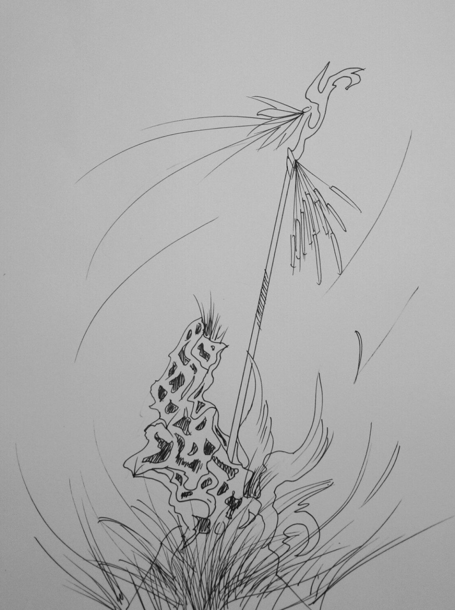
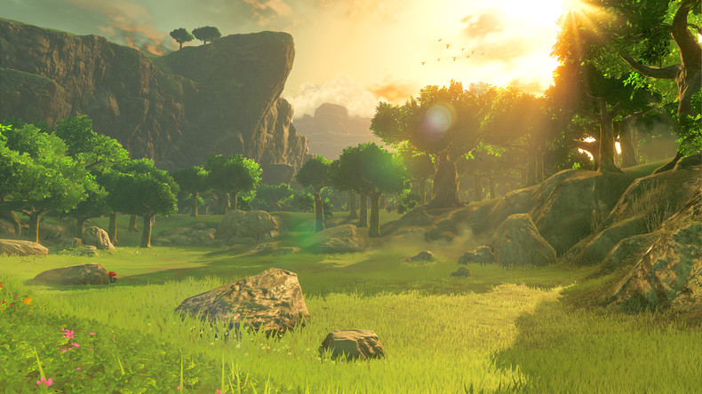

撰寫感想
老實說，這篇文章還是挺好寫的，自己腦內的故事一下子就串起來了，連我都不知道是怎麼回事。不過，這樣也好啦。
但是，我的文字技巧還要再多加磨練才行，這樣一來才不會有溝通障礙。
總之，先到此為止吧。
希望我們有緣再相見。
(也許吧)
她在綠林裡走著，疲憊得看著四周的景色；她在這裡找了大半天的路，卻只看到相同的綠色枝葉和大樹。這時的她已經搞不清楚自己的方位，迷失在廣大的森林中。
她試圖尋找顯眼的東西來定位以方便找路；當她找到一棵較高的樹，上前去定位方位的時候，她瞧見了一座滿是坑洞的石像，旁邊插了一根掛了一串木棒的竿子，這個奇怪的石像，一下子就吸引了她的注意。
她仔細了瞧了瞧這座石像，這塊石頭相當矮小，上面有許多因風化形成的坑洞，其中幾個洞還特別被鑽大了；竿子上有著彩色的線飾和雕刻裝飾，上頭的木棒串還特別被打磨過，整個石像看起來像是為了甚麼用途或標示路徑特別打造的。
一陣風吹過，被風吹拂的石像和竿子發出了奇特的樂聲，她聽著這個石像的樂音，發現原本精疲力盡的身體已經恢復精神，痠麻的腳也變得輕盈，頭腦也清楚了起來。
這個時候，她的腦海裡浮現了許許多多的回憶：小時候在大自然中嬉戲的回憶、和父母在一起的回憶、獨自旅行四處探訪的回憶、以及聽聞這座森林裡奇妙現象而來訪的動機…...慢著，這難道就是那個奇妙現象嗎？
察覺到這點的她開始仔細聽著樂音，觀察著這些音色帶來的巨大變化；她發現在石像四周的花草樹木，都比森林裡其他地方有生氣；風不斷得吹過森林，石像和竿子也不斷地奏出樂音，樂音隨著風傳遍了森林的角落。凡是樂音傳到的地方，都變的活力十足。
她隨手折下了石像旁一朵盛開著的藍黑色花朵（花蕊是白色），開始思考著她在一路旅行下來對於這件事情的種種傳聞：傳說中在這座森林中，曾有這麼一個擅長使役風水的部落，他們利用風中夾帶的大地氣流的力量，改變環境讓莊稼豐收，令環境變得生氣四溢；他們以在這種環境下間接培育出的藍黑色花朵作為部落的象徵，而那座石像，似乎是當時留下來的其中一個操控氣流的遺跡。
但後來不知為何，這個部落因為某種未知的原因消失了；留下的只剩傳說及極其稀少的遺跡，以及偶爾可見的藍黑花朵。
正當她思索的時候，石像附近出現了一條由花構成的小徑，風朝著那個方向吹過去，她不由自覺得走向了那條路。
走著走著，石像的樂聲逐漸消失，但風卻變得越來越強勁，不斷催促她快點走；途中她一直聽到一個摔落的聲音要她趕快離開，她不禁的表達自己的質疑。這時有股雜亂的聲音傳進了她的耳朵，她聽著聽著，臉上卻出現了無法形容的表情。
首先是一連串美好的畫面：氣流隨著奏音石像們安穩的流動在部落周圍，人們安居樂業，花草茂盛，孩子們在滿佈藍黑花朵的花海中嬉鬧；人們正在享受著利用氣流帶來的種種便利，然後……
有人提出了利用這項技術向外擴張的主意，隨後這個部落的氣氛就變了調：大量的氣流被囤積在部落的中心，人們開始建造巨大的奏音石塔，大家的情緒也開始變得激動。外圍的地區開始變得荒蕪，但部落卻變得越來越大；就像個無形的溫室般，裡面的動植物開始瘋狂生長。仿佛氣流的力量已經快抑制不住了，然後……
動物的慘叫、植物的瘋狂生長、狂風暴雨吹倒了巨大的奏音石塔、大量的大地氣流失控得席捲了整座森林、人們陷入發狂四處逃逸、許多人被吹向了迴旋升天的空中……
雜亂的聲音中，隱約傳來了一句話：危險、快離開、奏音石、必須被－－
由於控制不住自己的腳步，她一不小心就跌倒了。一起身回頭看，小徑已經不見蹤影，風也消失了；這時她才發現自己已經出了森林，這裡則是她進入森林時的入口。
她不知道為甚麼自己會沿著花徑走出來，而且這出乎意料的狀況更是讓她感到難解；她看了看自己手上的花，卻發現那朵花變成了淒慘的白色，中間變得扭曲的藍黑色花蕊中心裂開了，露出了鮮豔的紅色。
在那之後，她是否還在探查著這個部落的遺址和歷史，我們不得而知。
老實說，這篇文章還是挺好寫的，自己腦內的故事一下子就串起來了，連我都不知道是怎麼回事。不過，這樣也好啦。
但是，我的文字技巧還要再多加磨練才行，這樣一來才不會有溝通障礙。
總之，先到此為止吧。
希望我們有緣再相見。